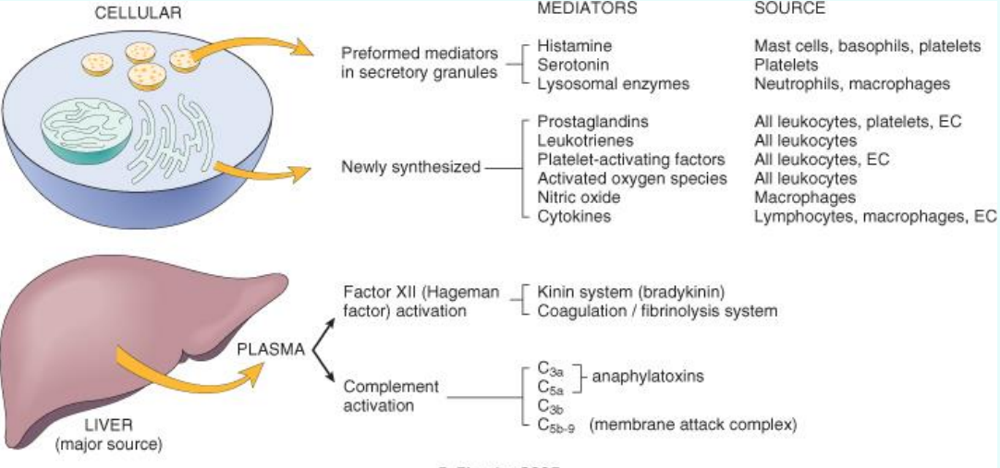
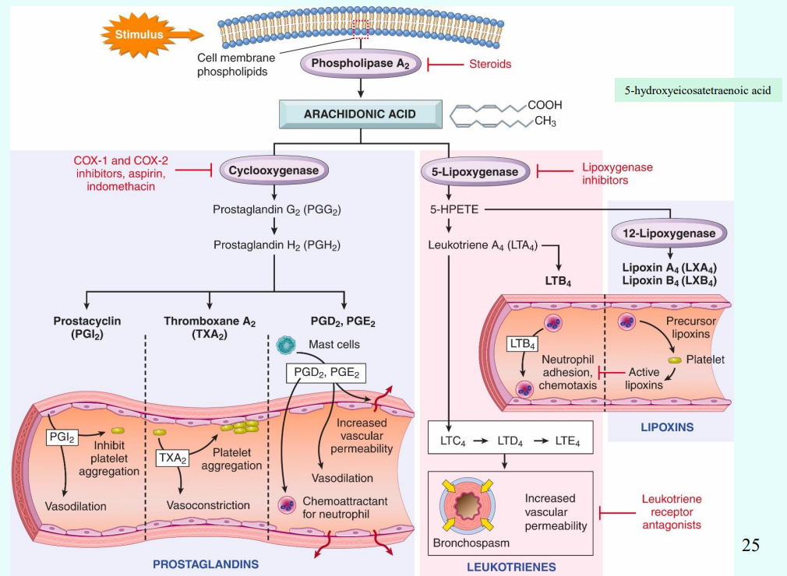
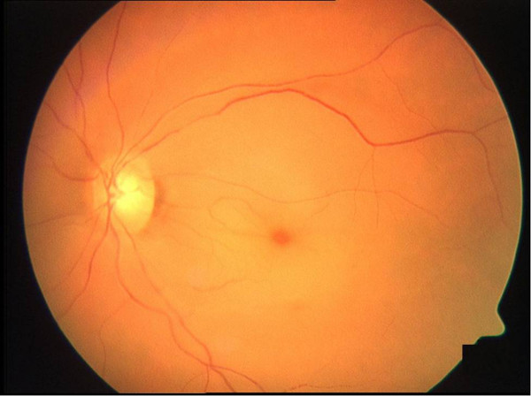

發炎
- Exudate
- 滲出液，含大量蛋白質，是為發炎性體液
- Transudate
- 漏出液，蛋白質含量低，微血管的膠體滲透壓減少而造成
Mediators

Vasoactive amines
- Histamine
- Serotonin
Arachidonic acid metabolites (花生四烯酸產物)
-
Prostaglandin (前列腺素)
-
leukotriene
-
lipoxin
 -
Steroids
-
COX-1 和COX-2 inhibitors，如Ibuprofen, aspirin, indomethacin等NSAIDs
-
lipoxygenase inhibitors
-
Leukotriene receptor antagonists(與lipoxygenase inhibitors同為氣喘藥)
| Action | Metabolites |
|---|---|
| Vasodilation | PGD2, E1, E2, I2 |
| Vasoconstriction | Thromboxane A2 |
| Leukotrienes C4, D4, E4 | |
| Increased vascular permeability | Leukotrienes C4, D4, E4 |
| PGD2, E2 | |
| Chemotaxis, leukocyte adhesion |
Leukotriene B4, HETE, PGD2 |
| Pain and fever | Prostaglandin (PGE2) |
Cytokine

分類
- Serous inflammation
- Cell-poor exudate
- No microbes
- ex. 水泡
- Fibrinous inflammation
- 纖維化
- 纖維化
- Suppurative or purulent inflammation
- 化膿
- Ulcer
- 黏膜不見
慢性發炎
Macrophage

- Granulomatous inflammation
- Macrophage 沒作用
- Foreign body granuloma
- Immune granuloma:
- tuberculosis,
- sarcoidosis
- leprosy
- cat-scratch diseases
ROS
-
ROS (neutrophils)
- 經常被phagocyte oxidase 誘導(respiratory burst)
- hypochlorite
- hydroxyl radical
-
Reactive nitrogen species (macrophages)
病
- Leukocytes Adhesion Deficiency (LAD-1)
- integrin 無用
- 皮膚或牙周等軟組織有recurrent soft tissue infection
- α1-antitrypsin(AAT) deficiency
- 無法抑制發炎酵素
- Chronic Granulomatous Disease (CGD, 慢性肉芽腫)
- 成因：缺乏NADPH氧化酶
- 症狀：容易在頭頸部、肺部等處產生巨噬細胞聚集而成的肉芽腫，容易反覆感染發炎。
血管再生 (angiogenesis)
growth factor ：
- Vascular endothelial growth factor(VEGF)
- Fibroblast growth factor(FGF)
- Angiopoietin 1, 2
- Platelet-derived growth factor(PDGF)
- Transforming growth factor β
血
病
- nutmeg liver
- 中央靜脈長期積血，最終導致周圍肝細胞萎縮壞死，中央靜脈附近呈現紅棕色，外型像一種叫做nutmeg的植物種子，故稱之為nutmeg liver。右心房出問題可能使血液無法從肝臟回流，長期下來就會產生nutmeg liver
- Gamna-Gandy body
- 長久、阻塞性的congestion造成脾腫大、出血，血液中的鐵堆積在組織間形成綠色或黃綠色的物質，稱為Gamna-Gandy body
- Budd-Chiari syndrome(hepatic vein thrombosis)
- 血液從肝回心臟時受阻礙，血流堆積在肝臟
- Nephrotic syndrome(腎病症候群)
- 腎臟功能異常導致蛋白質流失，血液滲透度下降，液體流出到組織間造成水腫
Cirrhosis(肝硬化)
： 肝功能異常無法製造白蛋白
- Myocardial Infarction
- 心肌梗塞
- aneurysm
- 動脈瘤
- hemoptysis (喀血)
- 來自下呼吸道的咳血
- melena
- 瀝青性便血，為上消化道出血的特徵，血液在腸道內經過酵素處理呈現瀝青色糞便
- hematemesis
- 吐血，來自上消化道的吐血
- hematochezia
- 便血，糞便呈鮮紅色
- metrorrhagia
- 陰道出血
- menorrhagia
- 經血過多
- hypovolemia
- 血容量不足
血小板疾病
- thrombocytopenia
- 血小板數量減少
- von Willebrand disease
- vWF有缺陷(較為常見)
- Bernard-Soulier syndrome
- GpIb有缺陷
- Glanzmann’s Thrombasthenia
- Gpllb-llla complex有缺陷
- Libman-Sacks
- 心內膜炎的一種，因為自體免疫疾病紅斑性狼瘡(SLE)引發
- Heparin-induced thrombocytopenia syndrome (HITS)
- 肝素觸發免疫反應，IgG＋PF4, Heparin+PF4 激活血小板，導致thrombocytopenia，但更容易血栓。
- Antiphospholipid antibody syndrome(APS)
- anti-phospholipid antibody 導致細胞死亡，venous or arterial thromboses, thrombocytopenia, repeated miscarriages, Renal failure
- Migratory thrombophlebitis (Trousseau syndrome)
- 在內臟出現腫瘤時，特別是pancreas adenocarcinoma的病患。會隨著淋巴或是血流產生遷移性的血栓(Trousseau syndrome)。
Disseminated intravascular coagulation (DIC)
- fibrin protein刺激後活化 → 到處微小的thrombi → 大量消耗platelet and coagulation factor
- hemorrhage
- microangiopathic anemia
- 微血管有microthrombus ，RBC 通過時受到破壞。
- Traveler syndrome
- 搭飛機的時候因久坐造成腿部靜脈血液滯留形成血栓，進一步導致pulmonary thromboembolism
- Caisson disease
- 潛水夫病
凝血
- 凝血因子II是prothrombin(凝血酶原)
- 內外在途徑的最終結果都是讓prothrombin(凝血酶原)轉化成thrombin(凝血酶) =
- 完整的*內皮細胞產生 PGI2、NO和ADPase 抗凝血
- Clot stabilization and resorption(血塊穩定與吸收)
- t-PA：可以使纖維蛋白溶解
- thrombomodulin(凝血酶調節素)：會介入coagulation cascade，限制凝血反應

thrombi 血栓
- arterial thrombi
- Lines of Zahn(pale & darker layers)：層狀的結構
- 灰白色且易碎
- venous thrombi
- 90%位於下肢
- 層次不規則，呈現紅色(無Lines of Zahn)
- 和死後血塊(postmortem clots)的區別：
- 血栓有層狀構造，黏在血管壁不易拔起
- 死後血塊沒有層狀構造，易拔起，顏色較深，表面有油脂堆積
- 血栓形成的 Primary(Genetic) factor：factor V mutation
Embolus and Embolism (栓子與栓塞)
- Embolus(栓子): 塞子
當個塞子
-
Thromboemboli(血栓栓子)
- 最常見
- from deep vein of leg and pelvis，尤其是在膝蓋以上的位置(>95%)
- 60%~80% 沒有臨床上症狀
- Systemic thromboembolism
- 動脈的血栓脫落後在主循環形成栓塞(arterial embolism)。
- 80% 血栓來自心臟內
- 下肢(75%)發生栓塞
-
Liquid emboli
- Fat emboli 大部分(90%)形因是長骨斷裂(long bone fracture)
- 肺部栓塞，相關症狀在 1 至3 天後突然發作(sudden onset)
- thrombocytopenia
- 血小板黏附至脂肪小球
- anemia
- neurologic symptoms
- pulmonary insufficiency
- Biochemical injury(較重要)：從脂肪小球釋出的free fatty acid 會造成內皮傷害以及局部發炎。
- thrombocytopenia
-
Amniotic fluid
- 羊水以及某些胎兒的組織進入媽媽的血液循環中。
- 死亡率很高，
-
Air embolism
- >100 cc 才會有臨床症狀
- Bends
- 氣泡出現在骨骼肌以及關節處（尤其在femoral head、tibia、humerus bone附近），造成嚴重疼痛
- Chokes(哽塞)
- 氣泡塞在肺部血管
- Caisson disease
- 氣泡在骨骼系統的持續存在造成多處骨骼缺血性壞死
Infarction and infarct(梗塞)
- Infarction
- 因為栓塞而造成遠端組織缺血性壞死(A consequence of ischemic necrosis of distal tissue from an embolic event)。(過程)
- Infarct
- 因為血管阻塞而壞死的區域稱作infarct(an area of ischemic necrosis caused by occlusion of vessels)
分類
-
White(anemic) infarct
- 發生在心臟、脾臟、腎臟動脈阻塞
- 單一輸入，無血液
-
Red or hemorrhagic infarct
- 靜脈阻塞，或者是具有雙重血流支配的器官(e.g.卵巢、睪丸、腸子、肺臟、肝臟)
-
Septic infarct(infective)
- 受到感染
- 可能源自於感染性的瓣膜贅物(infected heart valve vegetation)所造成的embolism。
Shock (cardiovascular collapse)
系統性的組織血液灌流不足
遺傳
Autosomal dominant (AD，體染色體顯性遺傳)
Autosomal recessive (AR，體染色體隱性遺傳)
| 名稱 | 機制 | 遺傳 | |
|---|---|---|---|
| Marfan syndrome | Fibrillin-1 合成異常 → 異常 elastic fiber | AD，15q21 點突變 | |
| Familial hypercholesterolemia | 異 | 肝細胞 LDL receptor異常 → 血漿膽固醇濃度 x2~3/ x5~6 → 軟組織堆積 | AD |
| 同 | |||
| Niemann-Pick disease (尼曼匹克氏症) | spinogomyelinase 無法產生 → spinogomyelin 的累積在細胞 | ||
Niemann-Pick disease 尼曼匹克氏症
- cherry-red spot

過敏
| 類型 | 原理 | 疾病 |
|---|---|---|
| IgE-mediated | 水溶性蛋白質穿透黏膜 | Allergic asthma(過敏性氣喘) |
| Seasonal hay fever(季節性花粉熱) | ||
| Atopic dermatitis(異位性皮膚炎) | ||
| 蜜蜂、Urticaria(蕁麻疹)、奇奇怪怪 | ||
| Type II hypersensitivity | 1. IgG, IgM 結合自體細胞表面抗原 2. C1 聚集，Classical 3. Macrophage 吞噬 |
Hemolytic disease of newborn (新生兒溶血性疾病) RhD−母攻擊RhD+子 |
| Goodpasture’s syndrome (肺出血腎炎症候群、古巴斯捷式症候群) |
||
| Insulin-dependent diabetes mellitus (IDDM) 胰島素依賴型糖尿病 | ||
| Type III hypersensitivity | 1. IgG, IgM 結合血清中的水溶性antigen 2. 根 type II 一樣 |
leprosy (痲瘋病) |
| malaria (瘧疾) | ||
| viral hepatitis | ||
| Rheumatoid arthritis (類風濕性關節炎) IgM 打 IgG，龍兄虎弟 |
||
| Systemic lupus erythematosus (SLE，全身紅斑性狼瘡) Ag: nucleosome |
||
| Delayed-type hypersensitivity reactions (DTH，延遲型) |
TH1, TH17 → B cell (TH1,2 主導，Cytokine 吸引 Macrophage) |
結核菌素 (Tuberculin response Skin tes) |
| Granulomatous hypersensitivity (肉芽腫過敏) |
||
| diabetes mellitus (IDDM) 胰島素依賴型糖尿病 | ||
| Contact dermatitis (接觸性皮膚炎) | ||
| T cell-mediated cytotoxicity | CD8+ T cell 胞殺 | Allograft rejection(同種異體移植的排斥反應) |
| Tumor immunity(腫瘤免疫) | ||
| Viral infection |
Systemic lupus erythematosus (SLE)
- anti-dsDNA
- anti-Sm: Smith抗原
- antiphospholipid (少見)
Rheumatoid arthritis (RA)
- IgG 攻擊關節囊
- 非化膿增生性滑膜炎(non-suppurative proliferative synovitis)
- 類風濕性因子(Rheumatoid factor, RF)
- 一種特殊 IgM 抗體
- 原本是判斷RA確診的方式之一，但現在發現在其他的自體免疫疾病病人身上也會有RF的出現，所以RF和RA不一定相關，不能當作判斷依據
- 成對稱性關節炎(symmetrical arthritis)
Sjögren’s Syndrome 修格蘭氏症候群
- 50~60歲的女性，破壞淚腺及唾液腺
- 分為原發性(Primary)和繼發性(Secondary)
免疫缺失
B cell
X-link
- X-linked agammaglobulinemia (XLA, Bruton Disease)
- 隱性
- Btk基因缺陷 (Bruton’s tyrosine kinase)
- T cell的功能正常。
- Immunodeficiency with increased IgM (HIgM)
- IgM增加性免疫缺損
- CD40L 缺陷 → 無法 class switching
- 容易製造IgM自體抗體
- Wiskott-Aldrich syndrome (WAS)
- Wiskott-Aldrich syndrome protein(WASP) ↓ → X染色體上CD43基因缺陷
- CD43 構築T細胞的骨架
- 抗體產量異常：IgA,E↑，IgG-，IgM↓
- 血小板小、少、爛
- Severe Combined ImmunoDeficiency (SCID)
- 重度複合免疫不全症
- X-linked recessive
- X染色體上γ chain基因缺失，cytokine receptors 失能
- Autosomal recessive
- Adenosine deaminase(ADA) 缺陷 40%
癌
基因
Oncogenes
- HER-2
- 乳癌即是HER-2 receptor過度表現
- Myc
- E2F → Transcription
- cycline, CDK → cell cycle
- Ras 調控 Myc
tumor-supressor gene，
-
RB
- RB的低/過度磷酸化 → 阻止/活化 E2F
- CDK4 磷酸化 RB
-
APC
- 接收 WNT signal 放出 β-catenin

- 接收 WNT signal 放出 β-catenin
-
TP53
- DNA受損則停止細胞週期
- guardian
- HPV: E6-P53, E7-P21, RB
- P53 → P21 → 抑制 CDK
-
BRCA1、BRCA2
- BRCA為DNA修補的重要factor，如果突變會有高度的DNA mutation的現象，容易發生乳癌或是婦癌相關的疾病。
心血管
MI
- 1- 2hrs
- wavy fibers
- 4-8hrs
- PMNs
- 18hrs
- 肉眼可以觀察到變化
- 顏色變白(pallor change)
- 肉眼可以觀察到變化
- 18-24hrs
- contraction band
- coagulation necrosis
- 細胞質嗜酸性 cytoplasmic eosinophilia
- 24-72hr
- complete coagulation necrosisof myofiber
- 4-7d
- 心臟最容易 rupture
- Macrophage 變多
- 肉芽組織
血管炎
(1)
| vessel | 病因 | 特色 | |
|---|---|---|---|
| Giant cell (temporal) vasculitis | Large | 免疫？ | |
| Takayasu’s arteritis | 自體？ | 15-40 女，低血壓 | |
| Polyarteritis nodosa (PAN) | Medium | HBV | 壞死、纖維化同時呈現 |
| Kawasaki disease | 免疫，病毒？ | 急性、自限、較少fibrinoid necrosis | |
| Buerger’s disease | Medium, small | 抽菸 | thromboangiitis obliterans (TAO), superficial nodular phlebitis (遊走性淺靜脈炎) |
| Wegener’s granulomatosis | Small | c-ANCA | 只影響呼吸道，急性肉芽腫壞死。 40歲(男性多於女性) |
| Microscopic polyangiitis | p-ANCA | 統一發炎階段 palpable purpura |
|
| Churg-Strauss syndrome (CSS) | allergic rhinitis, asthma, 嗜酸性球增加 | - | |
- Raynaud’s phenomenon
- 四肢末梢供血不良
- Primary
- 遺傳，好發於 14 歲女性
- 成因：冷或情緒引發的動脈、小動脈收縮
- Secondary
- narrowing 造成末梢的arterial insufficiency
肺癌
| 癌症類型 | 位置 | EGFR突變 | 病理學特徵 | 其他特徵 |
|---|---|---|---|---|
| Adenocarcinoma | 周邊肺部 | 常見 | 腺泡樣、乳頭狀、微乳頭狀、固體腺癌 | 多見於女性和非吸煙者 |
| Squamous Cell Carcinoma | 中央肺部或大支氣管 | 罕見 | 角化珠、細胞間橋、分泌副甲狀腺素 | 多與吸煙有關 |
| Small Cell Carcinoma | 中央肺部 | 罕見 | 小細胞、成團、核染色質細緻 | 高度侵襲性，與吸煙高度相關、分泌 ADH,ATCH |
| Non-Small Cell Carcinoma | 周邊肺部或中央肺部 | 視具體亞型而定 | 包含腺癌、鱗狀細胞癌、大細胞癌等 | 不同亞型特徵不同，EGFR突變多見於腺癌 |
GI
- Meckel Diverticulum
- true diverticulum
- from vitelline duct (卵黃管)
- ileum
- Hirschsprung Disease
- distal colon / rectum 無神經
- Gastroesophageal reflux disease (GERD)
- Barrett’s esophagus
- Chronic GERD
- Goblet cell 為診斷必須
-
colon adenocarcinoma
- APC → APC/WNT pathway 缺陷 → FAP(70%) → Sporadic colon cancer(80%)
- MSH2, MLH1 → Hereditary nonpolyposis colorectal cancer (HNPCC) → Sporadic colon cancer(15%)
-
肝細胞腺瘤(Hepatocellular Adenoma)
- b-catenin 的突變，可能轉變為惡性
-
膽管癌(Cholangiocarcinoma)
- 第二常見的肝內腫瘤
-
Gastric Adenocarcinoma
- CDH1 → Diffuse type
- signet-ring cell
- linitis plastic(皮革胃)
-
Gastrointestinal Stromal Tumor(GIST)
- 腹部最常見的間葉細胞瘤(mesenchymal tumor)
- tyrosine kinase c-KIT的基因突變
Female Genital System

- Paget’s disease
- 癌細胞中還沒穿過基底膜
- Surface epithelium tumors
-
BRCA1 與 BRCA2(兩者為腫瘤抑制基因)
-
Serous tumors
-
- 乳癌

男性
| 癌 | 特徵 |
|---|---|
| Embryonal | tubular、papillary convoluted |
| yolk sac | Schiller-Duval body |
| seminoma | solid pattern，incomplete septum |
| lymphocyte infiltrated granuloma | |
| Bowen’s disease | 單個、角質厚呈現灰白色 |
| Bowenoid papulosis | 多發性、可呈疣狀、pigmented |
泌尿
-
Rapid Progressive glomerulonephritis (RPGN)
- Glomerular crescent formation
- 自體免疫
- Goodpasture’s syndrome
- 紅斑性狼瘡System Lupus Erythematosus
- ANCA
-
Berger’s disease
- 台灣最常見的原發性腎病Primary GN
- 顯微鏡下血尿
- 緩慢的演變為慢性腎衰竭
-
Kimmelstiel-Wilson disease
- Nodular glomerulosclerosis
- DM 10-20 年
-
Minimal change disease (MCD，過去誤稱Lipoid nephrosis)
- 腎絲球中部分區域足細胞的梳子狀結構消失
- 2~6歲的孩童
-
局灶節段性腎小球硬化Focal segmental glomerulosclerosis (FSGS)
- 有腎病綜合症Nephrotic syndrome,、蛋白尿proteinuria、高血壓hypertension、顯微鏡下血尿microscopic hematuria與氮血症azotemia
-
最常見的nephrotic syndrome：小孩MCD，大人FSGS。
-
Renal cell carcinoma
- 60~70歲
- 男性比女性多2~3倍
- VHL gene (suppressor)
- Hippel-Lindau syndrome
內分泌
-
Sheehan’s syndrome
- 產後腦下垂體壞死
- 產後出血造成休克，腦下垂體前葉容易缺血性壞死
-
Carcinoma of the thyroid
-
papillary carcinoma
- 造成原因：游離輻射
- 淋巴結轉移，轉移速度慢
- BRAF的突變
- 預後最好
-
follicular carcinoma
- 血性轉移
- 轉移速度慢
- 轉移到肺臟或是骨頭
-
Pheochromocytoma嗜鉻細胞瘤
- 10%
- 10%的散發病例是雙側性
- 10% malignant behavior
- 10% extra-adrenal，此時又叫paraganglioma
- 10%沒有高血壓(現在認為是25%)
- 10%
-
血
-
多血症(Polycythemia)
- 血紅素(Hb)>15.5 g/dL，
-
週期性嗜中性球減少症(cyclic neutropenia)
- neutrophil(<1500/mm3)
- mutation of ELANE
-
Chronic myeloid leukemia (CML)
- t(9；22) 費城染色體
-
ALL
- 小孩最常見的 leukemia，B-ALL比T-ALL常見
-
AML
- 大人最常見的leukemia
-
Hodgkin lymphoma
- Reed-Sternberg cell(RS Cell, Owe’s eye)
- lunar cell
-
Non-Hodgkin lymphoma(NHL)
- Follicular lymphoma
- BCL2
- Diffuse large B-cell lymphoma
- 為最常見的aggressive lymphoma，長的快
- Follicular lymphoma